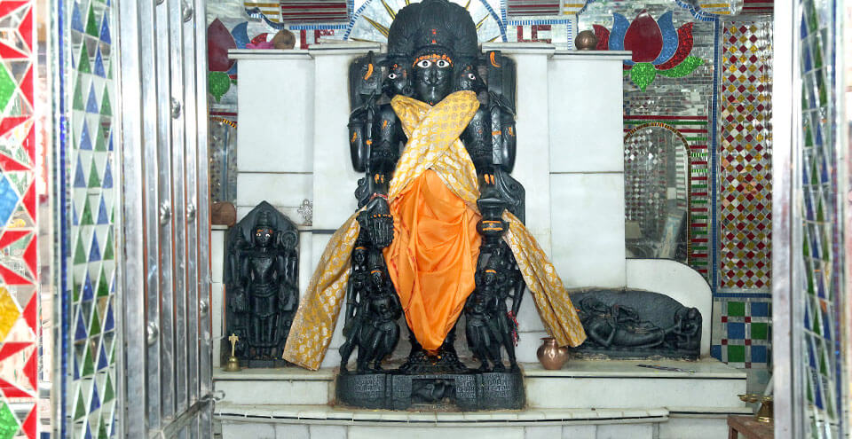

this village is known for its famous 12th century old temple of 'lord brahma'.which houses a statue of lord brahma of an average man's height.there is the record of maintained the statue of lord brahma in lod time.it is the second biggest murti on the earth before pushkar.in this reason cheench is define as the village of bhraman's.
